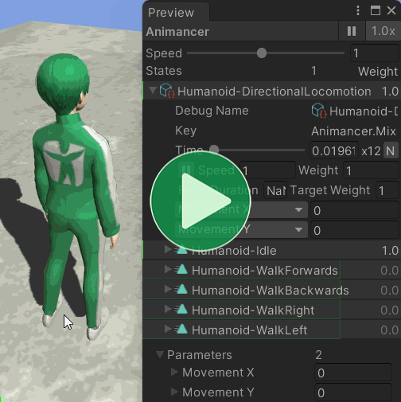
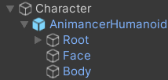
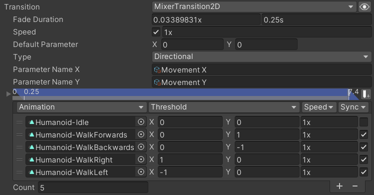
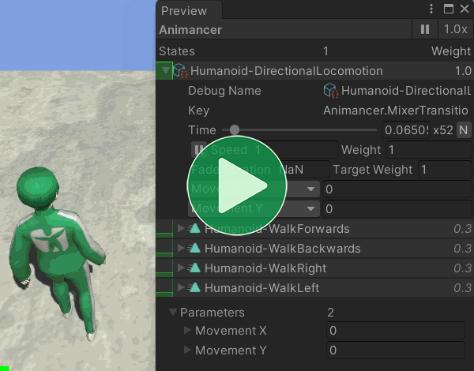
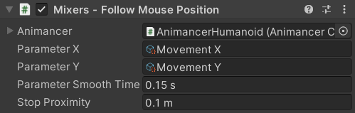

Location: Samples/03 Mixers/02 Directional Mixers
Recommended After: Linear Mixers
Learning Outcomes: in this sample you will learn:
How to use 2D Mixers to allow blended movement in any direction.
How to use Transition Assets and Parameters.
How to smoothly change parameter values.
How to move around the scene using Root Motion.
Summary
This sample uses a 2D Directional Mixer to allow the character to move forwards, backwards, sideways, and anywhere inbetween. It also uses Root Motion to move around the scene.

Overview
In order to keep the character's logic separate from their visuals, it's often a good idea to keep the model (AnimancerHumanoid) as a child of the root object (Character) where the main logical and physics components are located. This sample is still simple enough that there's no real need for that here, but it does anyway for the sake of demonstrating good practices.
{kind=link}
- Since the
Animatorneeds to be on the model, theRedirectRootMotionToTransformcomponent is used to redirect the Root Motion to the root object. PlayTransitionAssetOnEnableis reused from the Linear Blending sample to keep the animations separate from the parameter control logic.
FollowMousePosition controls the movement Parameters to make the character follow the mouse cursor around the scene:
using Animancer;
using Animancer.Units;
using UnityEngine;
public class FollowMousePosition : MonoBehaviour
{
[SerializeField] private AnimancerComponent _Animancer;
[SerializeField] private StringAsset _ParameterX;
[SerializeField] private StringAsset _ParameterY;
[SerializeField, Seconds] private float _ParameterSmoothTime = 0.15f;
[SerializeField, Meters] private float _StopProximity = 0.1f;
private SmoothedVector2Parameter _SmoothedParameter;
protected virtual void Awake()
{
_SmoothedParameter = new SmoothedVector2Parameter(
_Animancer,
_ParameterX,
_ParameterY,
_ParameterSmoothTime);
}
protected virtual void Update()
{
Vector3 movementDirection = GetMovementDirection();
Vector3 localDirection = transform.InverseTransformDirection(movementDirection);
_SmoothedParameter.TargetValue = new Vector2(localDirection.x, localDirection.z);
}
private Vector3 GetMovementDirection()
{
Ray ray = Camera.main.ScreenPointToRay(SampleInput.MousePosition);
if (!Physics.Raycast(ray, out RaycastHit raycastHit))
return Vector3.zero;
Vector3 direction = raycastHit.point - transform.position;
float squaredDistance = direction.sqrMagnitude;
if (squaredDistance <= _StopProximity * _StopProximity)
{
return Vector3.zero;
}
else
{
return direction / Mathf.Sqrt(squaredDistance);
}
}
protected virtual void OnDestroy()
{
_SmoothedParameter.Dispose();
}
}
Idle Blending

This sample only has a single state containing the 2D Directional Mixer, but in a real game it's often a good idea to have a separate state for the Idle animation so that characters standing still cost as little performance as possible instead of constantly running their full locomotion mixer. However, even if a separate Idle state is used, it's still a good idea to keep it in the Mixer as well so that it can give reasonable results at low parameter values. Otherwise trying to stand still would look like this:

Note that the 0.3 shown for the Weight of each of the animations is actually 0.25 rounded to one decimal place so they add up to a total of 1.
Serialized Fields
| Code | Inspector |
|---|---|
|
 The fields are fairly straightforward: just anAnimancerComponent, some StringAssets for the parameter names and floats to control various details (with appropriate Units Attributes to indicate their units of measurement in the Inspector). |
Parameter Initialization
Unlike FloatParameterSlider from the Linear Mixers sample, this time we want to smooth any parameter changes to prevent the character's pose from changing too rapidly.
For a 2D Mixer, we can smooth its parameters using a SmoothedVector2Parameter like so:
private SmoothedVector2Parameter _SmoothedParameter;
protected virtual void Awake()
{
_SmoothedParameter = new SmoothedVector2Parameter(
_Animancer,
_ParameterX,
_ParameterY,
_ParameterSmoothTime);
}
For a 1D Mixer we would have used a SmoothedFloatParameter.
It's not necessary for this sample, but if this component could be destroyed before the rest of the character then we need to Dispose the smoother to remove it from the target parameters.
protected virtual void OnDestroy()
{
_SmoothedParameters.Dispose();
}
The Parameter Smoothing section in the User Manual explains it in more detail.
Movement Direction
Every Update the first thing we need to do is calculate which direction the character wants to move.
protected virtual void Update()
{
Vector3 movementDirection = GetMovementDirection();
...
}
private Vector3 GetMovementDirection()
{
We could use SampleInput.WASD, but that would be limited to only 8 directions unless we use a controller instead of a keyboard. So instead, this sample will move the character towards the mouse position to properly demonstrate blending in any direction using some Vector Math and Raycasting.
To calculate the world position the mouse is pointing at, we need a Ray from the Camera based on the screen position of the mouse:
Ray ray = Camera.main.ScreenPointToRay(SampleInput.MousePosition);
Then we can use a Physics.Raycast to find out where that Ray intersects a Collider in the world:
if (!Physics.Raycast(ray, out RaycastHit raycastHit))
return Vector3.zero;
Physics.Raycastreturnstrueif the ray hits something, so the!means that if it misses then we simply returnVector3.zeroas the movement direction.- The
outparameter works like a returned value to give us theRaycastHitwhich contains the details of what was hit. - Early Returns like this can make code easier to read.
In this case, the detail we need is the raycastHit.point which tells us where the Ray hit something. So the direction we want to move is the vector from our current transform.position to the hit point:
Vector3 direction = raycastHit.point - transform.position;
Since the character will be moving a certain distance every frame, it's unlikely that they will ever actually reach the exact target position. In a real game, things like physics collisions would make it even less likely. So to avoid causing the character to jitter back and forth over the target position, we simply compare the Squared Magnitude of the direction with a small _StopProximity value to let the charaqcter stop moving if they're already close to the destination.
float squaredDistance = direction.sqrMagnitude;
if (squaredDistance <= _StopProximity * _StopProximity)
{
return Vector3.zero;
}
Otherwise, we need to Normalize the direction so that we don't change speed based on distance.
else
{
return direction / Mathf.Sqrt(squaredDistance);
}
}
Calling direction.Normalize() would do the same thing, but would waste a tiny bit of performance calculating the magnitude again.
Parameter Calculation
Back in the Update method, we now have the direction we want to move:
protected virtual void Update()
{
Vector3 movementDirection = GetMovementDirection();
That direction is in world space but we need it in the character's local space to calculate the blending parameters to that "right" means "the character's right" instead of "world space right". That can be easily done using Transform.InverseTransformDirection:
Vector3 localDirection = transform.InverseTransformDirection(movementDirection);
Then we simply set the TargetValue of the smoothed parameter to make it start moving towards those values:
- Parameter X towards Direction X (right/left).
- Parameter Y towards Direction Z (forwards/backwards).
- Ignore Direction Y because the Mixer is only 2D.
_SmoothedParameter.TargetValue = new Vector2(localDirection.x, localDirection.z);
}
Further Development
The blending shown here is pretty good, but there are a few movement directions which don't animate realistically and can cause the legs to intersect with each other. The obvious solution is to give the Mixer more animations to cover diagonal movement.
Another approach is to set up a system for defining where the areas of bad blending are in parameter space, then when the parameters would go into those areas you rotate the character's hips to get them out of that area and rotate their chest in the opposite direction so that they're still facing the right way. That's essentially what people do in real life to avoid this problem, rotate their hips so they can essentially walk directly forwards or backwards in the direction they want to move and twist their upper body to face the direction they want to face.